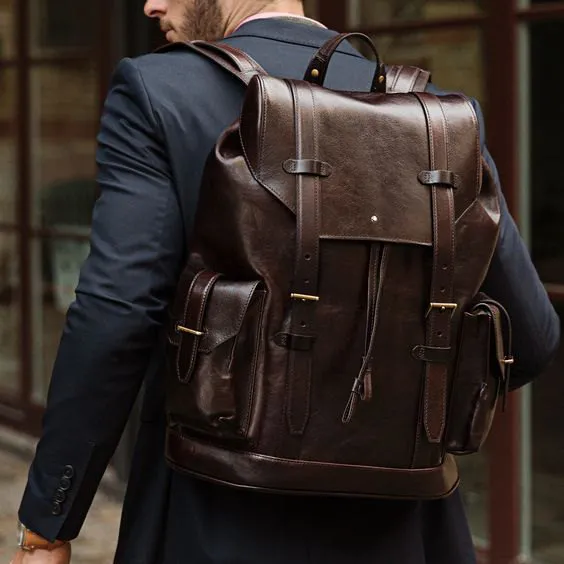
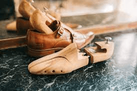
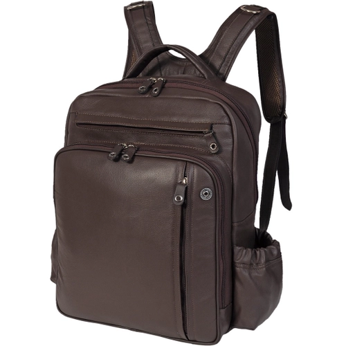
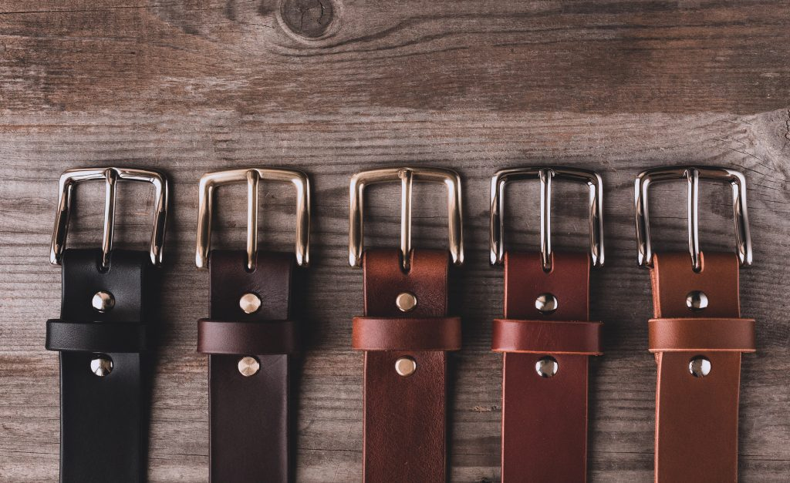

SAPATOS . CINTOS . BOLSAS
Consertos

venda-sapatos

vendas-bolsas
venda-cintos

Consertos de Sapatos
Serviço de sapataria é nossa especialidade. Afinal de contas, foi com esses serviços que a gente começou toda a nossa história. Adoramos consertar os calçados de nossos clientes e fazemos isso com muita dedicação e carinho. A Minha Costureira Meu Sapateiro conta com experientes sapateiros, treinados para operar dentro dos padrões de qualidade internacional de nossas lojas. O legal dos serviços de sapataria é que você consegue reformar seus calçados, mantendo-os por mais tempo e evitando jogá-los fora.
Costura

salto

troca-sola

forma
Vendas Sapatos
Somente Couros Premium utilizados. A Linha Stile de sapatos masculinos é feita toda em couros premium de bezerro, box, nobuck, camurça de cabra, bovino estampado croco, bovino estampado python e bovino estampado elefante. A Capotacco produz artesanalmente todos os seus sapatos, para que seus clientes tenham uma experiência incrível ao calçar seu sapato no dia-a-dia. Os modelos da linha Stile são peças essenciais no guarda-roupa de todo o homem que domina a arte de vestir-se bem.
Cadarço-fivelas

duas-cores-fivelas

solas-borracha

detalhes-furos

Vendas-bolsa-mochilas-pastas
A emoção do toque, a beleza da peça e o cheiro inconfundível. Uma história que nasceu da paixão pelo couro. Assim começou a Sapataria do Ronaldo, uma indústria idealizada por um casal empreendedor que não teve receio de investir no pequeno negócio. Visionários da sua época, os sócios apostavam no couro bovino como elemento principal para a confecção de bolsas mochilas e pastas.
Mochila-marrom
pasta-marrom

bolsa-cinto

pasta-preto-retro

Vendas-cintos
O cinto masculino é aquele acessório essencial no guarda-roupa de qualquer homem. Além de ser uma peça super versátil e que consegue transitar facilmente em diferentes looks, é extremamente funcional para o dia a dia. Você consegue combiná-lo com calça social masculina, calça jeans masculina ou até mesmo bermuda jeans masculina. Na Sapataria do Ronaldo você encontra diversos modelos, como cinto social masculino ou cinto casual masculino. Confira todas as opções e deixe o seu look ainda mais completo!
cintos-cores
dois-cintos-1belt

cinto-marrom-classico